SPARTA WWW Site
Pictures & Movies from SPARTA Simulations
The images and movies on this page are from SPARTA simulations. They
have been rendered with various visualization packages.
| Rayleigh-Taylor mixing |
| Richtmyer-Meshkov mixing |
| Grid adaptivity for reentry flows |
| Flow around Mir space station |
| 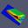 | ParaView viz of reentry flows
|
These simple animations are from the examples sub-directory of the
SPARTA distribution and are described in this
section of the SPARTA documentation. Most
are 2d models. They are all GIF files, made from snapshots produced
by the dump image command. The movies play 3
times in a loop before stopping; click the reload icon in your browser
to play them again.
| 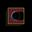 | ambipolar flow around circle |
| 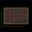 | axisymmetric flow around circle |
| 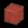 | collisional flow with chemistry in a box |
| 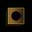 | flow around a circle |
| 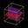 | collisional flow in a box |
| 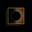 | surface and face emission from and around a circle |
| 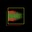 | flow profile defined by file |
| 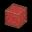 | free molecular flow in a box |
| 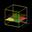 | flow around a sphere |
| 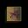 | flow around a spiky circle |
 | flow around a staircase step
|
All the images below are shown in small size. Click on the image to
view a larger version. For movies, click on the small image to
trigger the animation or a download of the movie file.
Rayleigh-Taylor mixing
This is work by Michael Gallis (magalli at sandia.gov) at Sandia.
This calculation was done to model Rayleigh/Taylor mixing which occurs
when a heavy gas is on top of a light gas and gravity induces mixing
and turbulent effects.
This is a large 3d calculation of He (red) on top of Ar (blue). 4.5B
particles were run with 400M grid cells for 240K timesteps. The
simulation was run on 32K nodes (16 cores per node, 512K MPI tasks) of
the Sequoia BG/Q machine at Lawrence Livermore National Labs (LLNL).
Snapshot images of the simulation were created using SPARTA's dump
image command, rather than saving particle data
to disk. The first image is the final state of the simulation. The
second image is a movie of the simulation.
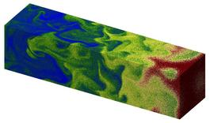
Second image is for a 165 MB QuickTime movie.
This paper has further details about the simulations:
Direct simulation Monte Carlo investigation of the Rayleigh-Taylor
instability, M. A. Gallis, T. P. Koehler, J. R. Torczynski,
S. J. Plimpton, Phys Rev Fluids, 1, 043403 (2016).
(abstract)
Richtmyer-Meshkov mixing
This is work by Michael Gallis (magalli at sandia.gov) at Sandia.
This calculation was done to model Richtmyer/Meshkov mixing which
occurs when a light gas is on top of a heavier gas and a shock induces
mixing and turbulent effects.
This is a large 2d calculation of He (green) on top of Ar (red). 4.5B
particles were run with 400M grid cells for 240K timesteps. The
simulation was run on 32K nodes (16 cores per node, 512K MPI tasks) of
the Sequoia BG/Q machine at Lawrence Livermore National Labs (LLNL).
Snapshot images of the simulation were created using SPARTA's dump
image command, rather than saving particle data
to disk. The first 2 images are the initial and final state of the
simulation. The thrid image is a movie of the simulation. The fourth
image is a comparison of the DSMC results to experiment and a
continuum Navier-Stokes simulation.

 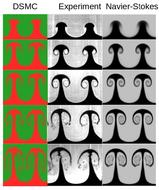
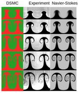
This paper has further details about the simulations:
Direct simulation Monte Carlo investigation of the Richtmyer-Meshkov
instability, M. A. Gallis, T. P. Koehler, J. R. Torczynski,
S. J. Plimpton, Physics of Fluids, 27, 084105 (2015).
(abstract)
(http://dx.doi.org/10.1063/1.4928338)
Flow around Mir space station
This is work by Michael Gallis (magalli at sandia.gov) at Sandia,
using a surface mesh for the Mir space station provided by Jay LeBeau
(NASA).
This calculation was done to model flow around Mir at an altitude of
300K feet. 1.6B particles were used (at steady state) with a
computational grid of 10M cells. The Mir surface mesh has 53K
triangles. The simulation ran for 0.5M timesteps on 128 nodes (2048
cores) of a large Intel Xeon cluster at Sandia. The final
time-averaged steady-state grid and surface element data was written
to a file and visualized by TecPlot. The
grid cell coloring is for gas temperature; the surface element
coloring is for heatflux onto the surface.
The first image is a single snapshot of a cut plane through the data
set. The second image is a "movie" of scanning the cut plane through
the data set. The third and fourth images are of similar data sets
rendered by the ParaView visualization toolkit.
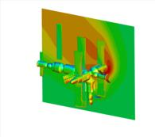
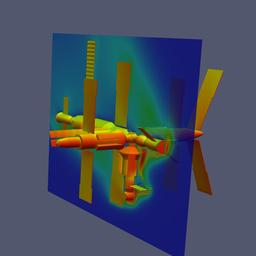
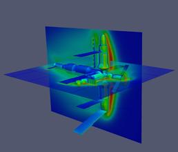
Grid adaptivity for reentry flows
These are snapshots of the adapted grid used to model
flow around spacecraft.
The first image is of the Apollo capsule, with flow coming from the
lower left. The grid is adapted through 5 levels. The second image
is of the Mir space station with a few levels of adaptation around the
leading edge of the surfaces directly impacted by the flow.
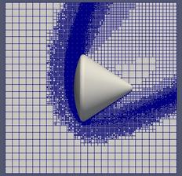
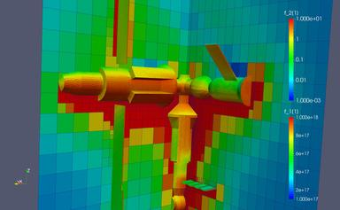
ParaView viz of reentry flows
These are snapshots from simulations done by Michael Gallis (magalli
at sandia.gov) to illlustrate use of the open-source ParaView
visualization package with SPARTA output. Each is a simple
demonstration of flow around a spacecraft in the upper atomosphere,
e.g. as it undergoes re-entry.
The workflow for running the simulations was as follows.
a) Convert an STL file representing the object to a SPARTA surface
data file, readable by the read_surf command.
This conversion was done with the stl2surf
tool. The STL and sdata surface files
are in the data directory of the distribution.
b) Run a SPARTA simulation which produces grid and surface element
output via the dump grid and dump surf
commands.
c) Convert the output to ParaView format via the paraview
tools Python scripts.
d) Run ParaView to produce images like these or
animations.
Thsee are images of the Orion, Gemini, and Apollo capsules, and the
space shuttle.
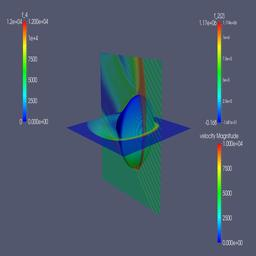
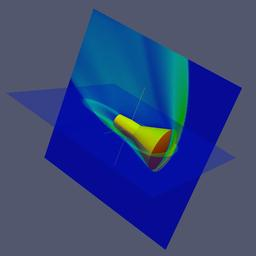
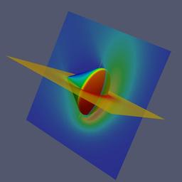
Ambipolar
Flow of ambipolar plasma around a circle.
Input script for this problem from the
example/ambi directory. The ambipolar ions, induced by the flow
colliding with with the surface, are shown larger in the movie.
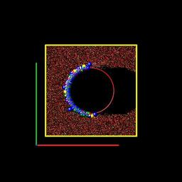
Axisymmetry
Axisymmetric flow around a circle (sphere).
Input script for this problem from the
example/axi directory.
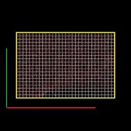
Chemistry
Collisional flow with chemistry in a box.
Input script for this problem from the
example/chem directory.

Circle
Flow around a circle.
Input script for this problem from the
example/circle directory.
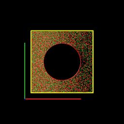
Collisions
Collisional flow in a box.
Input script for this problem from the
example/collide directory.
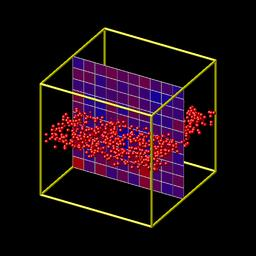
Surface and face emission
Surface emission and box face from and around a circle
and from a second circle used as a boundary.
Input scripts for 7 cases, from the examples/emit directory.
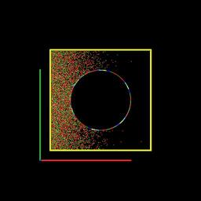
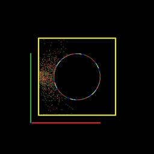
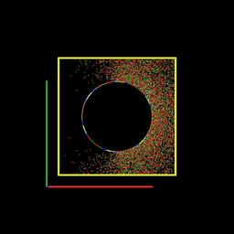
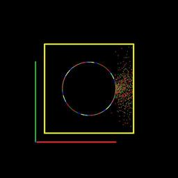
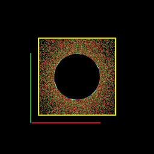
 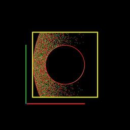
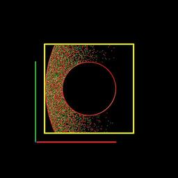
Flow profile defined by file
Particle influx through box face defined by mesh values in a file via
the fix emit/face/file command.
Input script and flow profile
definition for this problem from the
example/flowfile directory.
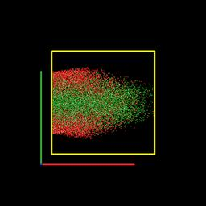
Free molecular flow
Free molecular flow in a box.
Input script for this problem from the
example/free directory.
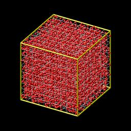
Sphere
Flow around a sphere.
Input script for this problem from the
example/sphere directory.
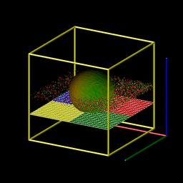
Spiky circle
Flow around a spiky circly, illustrating cut and split cells.
Input script for this problem from the
example/spiky directory.
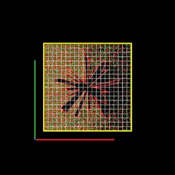
Step
Flow around a staircase step.
Input script for this problem from the
example/step directory.
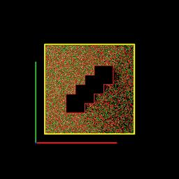